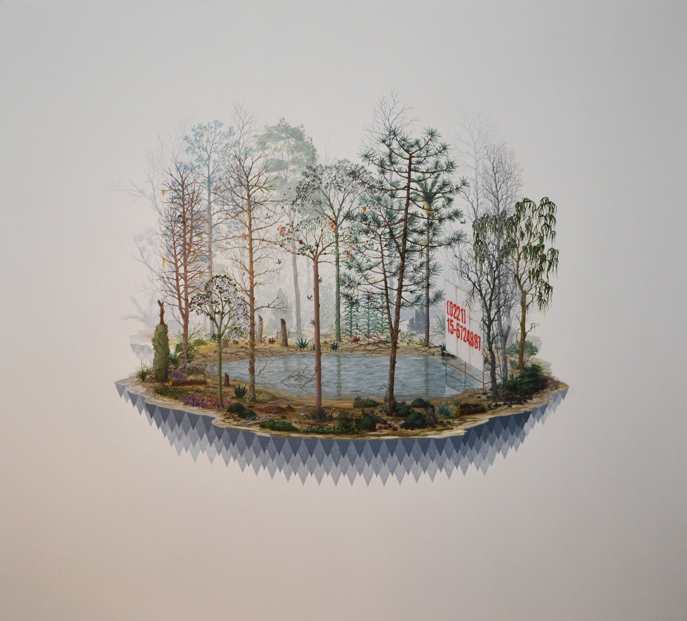
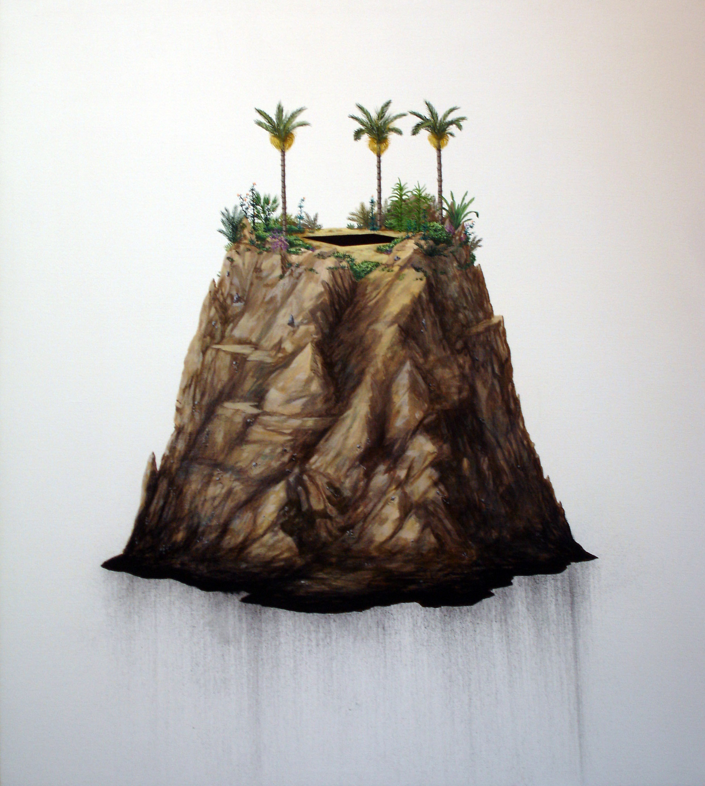
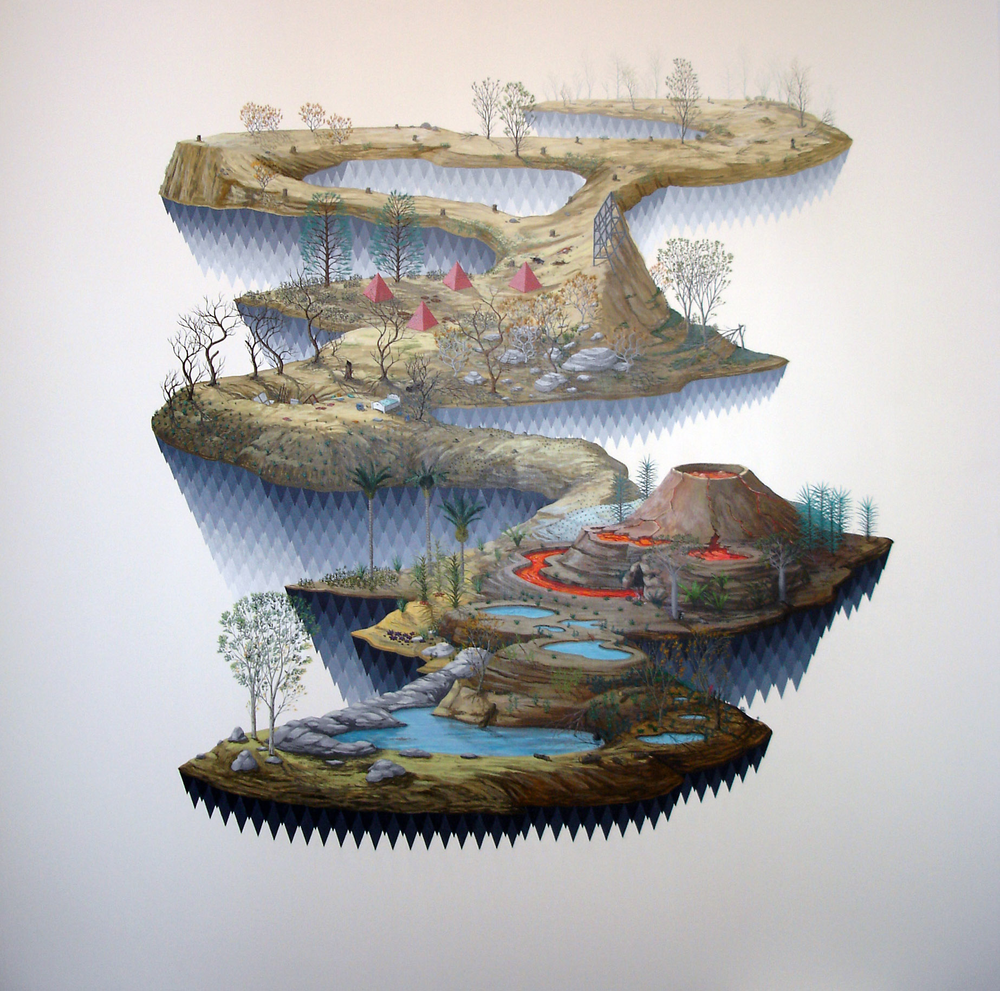
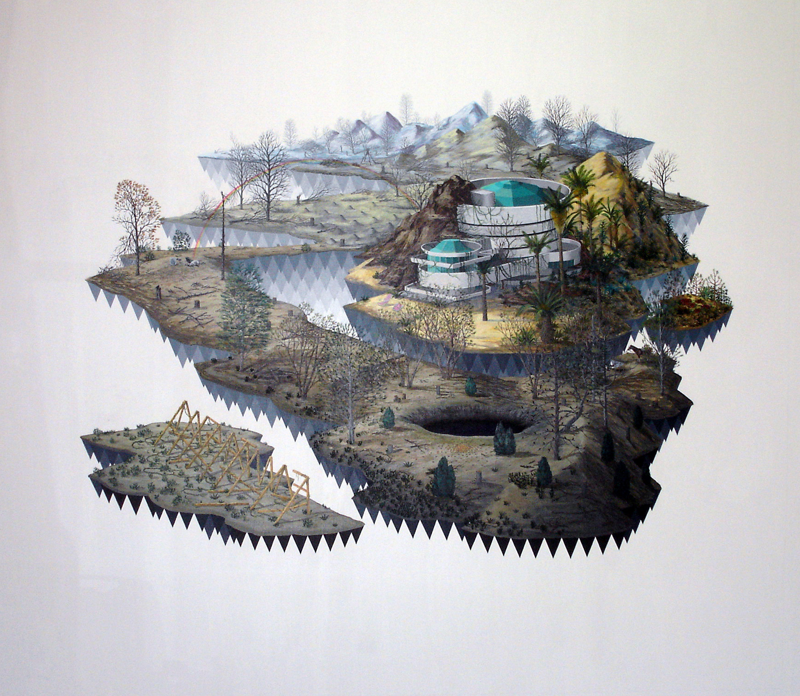
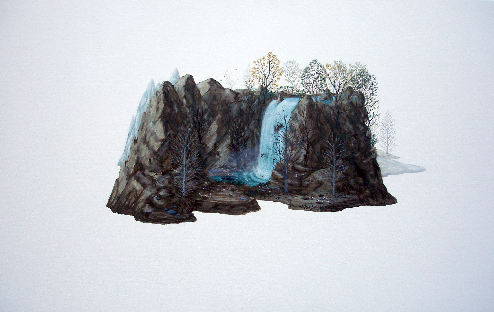
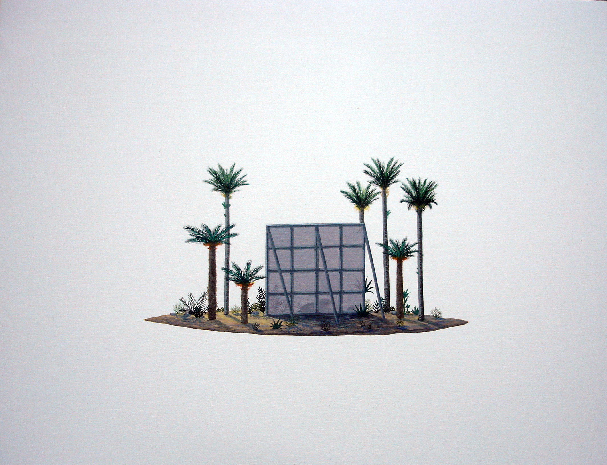

Islas
Islas reúne una serie de pinturas realizadas entre 2006 y 2015 que exploran la construcción de escenas autónomas organizadas en torno a territorios cerrados. Cada isla funciona como un espacio autosuficiente, con reglas propias, donde conviven elementos narrativos, arquitecturas precarias y situaciones suspendidas. Aunque no constituyen una serie cerrada, estas obras anticipan preocupaciones que atraviesan trabajos posteriores, especialmente en relación con el espacio, la acumulación y la organización del campo pictórico.





